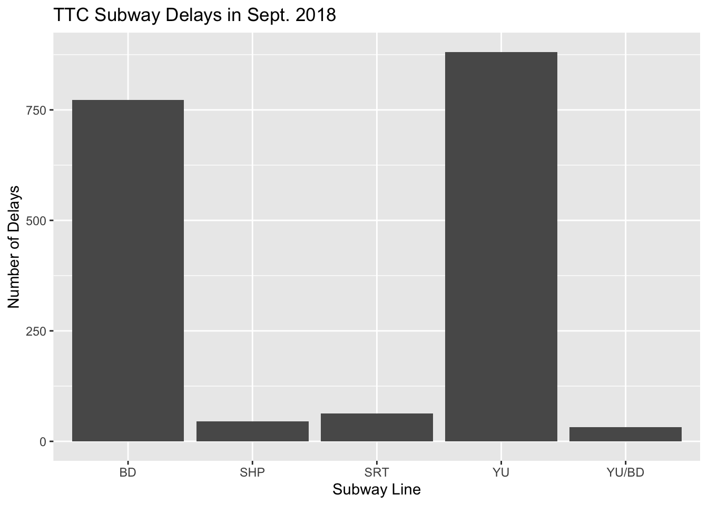
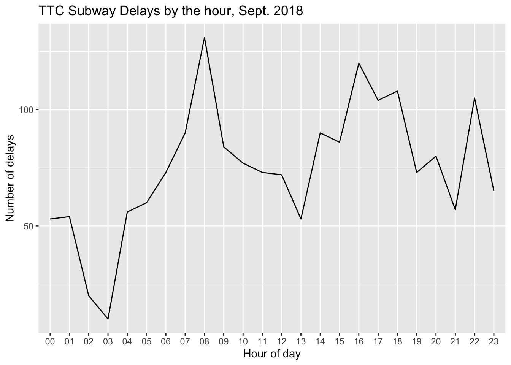

Chapter 12 Case study - TTC Subway Delays
This was written by Michael Chong.
12.1 Introduction
This is an Rmarkdown document that illustrates a workflow where we:
- Use the
opendatatorontoR package to download a dataset - Manipulate the data using tools from the
dplyrandtidyrpackages - Visualizing the data by making a plot using the
ggplot2R package
12.1.1 Prerequesites
If your computer has an internet connection, you can download and install these R packages directly from CRAN (Comprehensive R Archive Network) using the install.packages() function.
# Vector of string objects that holds the names of the packages
my_packages <- c("opendatatoronto", "dplyr", "ggplot2", "tidyr")
# For each of the 3 packages, check whether each one exists, and install if not
for (pkg in my_packages) {
if (!pkg %in% installed.packages()) {
# If package is not installed, install it:
install.packages(pkg)
}
}After installing, we still need to load the package to make the functions available to us. We do this with library():
12.2 Finding and downloading data using opendatatoronto
12.2.1 Finding the data
To find a dataset you like, you have a couple options:
- Search for a dataset manually via the Toronto Open Data Portal
- Use the
search_packages()function
Here we’ll use the search_packages() function to keep this document self-contained.
# Search packages (this returns a table)
delay_packages <- search_packages("delay")
# Print the table
delay_packages## # A tibble: 3 x 10
## title id topics civic_issues excerpt dataset_category num_resources formats
## <chr> <chr> <chr> <chr> <chr> <chr> <int> <chr>
## 1 TTC … 996c… Trans… Mobility TTC Su… Document 35 XLSX
## 2 TTC … b68c… Trans… Mobility TTC St… Document 7 XLSX
## 3 TTC … e271… Trans… Mobility TTC Bu… Document 7 XLSX
## # … with 2 more variables: refresh_rate <chr>, last_refreshed <date>The R output might not show the full titles of the datasets when it prints the dataframe. If so, it might be helpful to access the title column of the dataframe as a vector, which we can do using the $ operator:
## [1] "TTC Subway Delay Data" "TTC Streetcar Delay Data"
## [3] "TTC Bus Delay Data"Among these, I’d like to see what’s available in the “TTC Subway Delay Data” data. I do this using list_package_resources(). The argument of this function is a 1-line dataframe in the format of the output of search_packages(). So before I use list_package_resources(), I narrow down the ridership_packages dataframe like so using the filter() function:
subway_delay_package<- delay_packages %>%
filter(title == "TTC Subway Delay Data") # Only keep the row(s) where the title is "TTC Subway Delay Data"Our new 1-line data frame looks like:
## # A tibble: 1 x 10
## title id topics civic_issues excerpt dataset_category num_resources formats
## <chr> <chr> <chr> <chr> <chr> <chr> <int> <chr>
## 1 TTC … 996c… Trans… Mobility TTC Su… Document 35 XLSX
## # … with 2 more variables: refresh_rate <chr>, last_refreshed <date>Now we can pass this as an argument to list_package_resources():
## # A tibble: 35 x 4
## name id format last_modified
## <chr> <chr> <chr> <date>
## 1 ttc-subway-delay-codes fece136b-224a-412a-b191-8d… XLSX 2019-08-15
## 2 ttc-subway-delay-jan-2014-a… 6664420f-316f-4f94-9ba4-d4… XLSX 2019-08-15
## 3 ttc-subway-delay-may-2017 d1159888-0035-45a0-b238-86… XLSX 2019-08-15
## 4 ttc-subway-delay-june-2017 240d8e8c-d300-4f91-b94f-cb… XLSX 2019-08-15
## 5 ttc-subway-delay-july-2017 98d4ac77-aa9f-40a3-97ee-6f… XLSX 2019-08-15
## 6 ttc-subway-delay-august-2017 92e7649a-cf2f-4ac7-9802-b7… XLSX 2019-08-15
## 7 ttc-subway-delay-september-… 61412f10-656b-4992-9a1a-a1… XLSX 2019-08-15
## 8 ttc-subway-delay-october-20… 69a6db37-7982-49c7-8dbc-56… XLSX 2019-08-15
## 9 ttc-subway-delay-november-2… 10080217-8022-41c0-a8ba-2a… XLSX 2019-08-15
## 10 ttc-subway-delay-december-2… a731c4bb-630a-4530-b590-b3… XLSX 2019-08-15
## # … with 25 more rowsAgain, we might have trouble seeing the full first column, so let’s extract the name column as a vector:
## [1] "ttc-subway-delay-codes"
## [2] "ttc-subway-delay-jan-2014-april-2017"
## [3] "ttc-subway-delay-may-2017"
## [4] "ttc-subway-delay-june-2017"
## [5] "ttc-subway-delay-july-2017"
## [6] "ttc-subway-delay-august-2017"
## [7] "ttc-subway-delay-september-2017"
## [8] "ttc-subway-delay-october-2017"
## [9] "ttc-subway-delay-november-2017"
## [10] "ttc-subway-delay-december-2017"
## [11] "ttc-subway-delay-january-2018"
## [12] "ttc-subway-delay-february-2018"
## [13] "ttc-subway-delay-march-2018"
## [14] "ttc-subway-delay-april-2018"
## [15] "ttc-subway-delay-may-2018"
## [16] "ttc-subway-delay-june-2018"
## [17] "ttc-subway-delay-july-2018"
## [18] "ttc-subway-delay-august-2018"
## [19] "ttc-subway-delay-september-2018"
## [20] "ttc-subway-delay-october-2018"
## [21] "ttc-subway-delay-november-2018"
## [22] "ttc-subway-delay-december-2018"
## [23] "ttc-subway-delay-readme"
## [24] "ttc-subway-delay-january-2019"
## [25] "ttc-subway-delay-february-2019"
## [26] "ttc-subway-delay-march-2019"
## [27] "ttc-subway-delay-april-2019"
## [28] "ttc-subway-delay-may-2019"
## [29] "ttc-subway-delay-june-2019"
## [30] "ttc-subway-delay-July 2019"
## [31] "ttc-subway-delay-August-2019"
## [32] "ttc-subway-delay-September 2019"
## [33] "ttc-subway-delay-October-2019\t"
## [34] "ttc-subway-delay-November-2019"
## [35] "ttc-subway-delay-December-2019"12.2.2 Retrieving the data
Suppose we’re interested in looking at the delay in September of 2018. We can retrieve the data by filter()ing this table to the corresponding line, and then using get_resource().
subway_sept2018 <- subway_delay_package %>% # Start with the package
list_package_resources() %>% # List the resources in the package
filter(name == "ttc-subway-delay-september-2018") %>% # Only keep the resource we want
get_resource()Finally we have the data frame that we want:
## # A tibble: 1,794 x 10
## Date Time Day Station Code `Min Delay` `Min Gap` Bound
## <dttm> <chr> <chr> <chr> <chr> <dbl> <dbl> <chr>
## 1 2018-09-01 00:00:00 00:22 Satu… PAPE S… SUUT 14 18 E
## 2 2018-09-01 00:00:00 00:24 Satu… ROYAL … TUO 6 10 W
## 3 2018-09-01 00:00:00 00:51 Satu… FINCH … MUNCA 0 0 <NA>
## 4 2018-09-01 00:00:00 04:00 Satu… BLOOR … MUO 0 0 <NA>
## 5 2018-09-01 00:00:00 05:40 Satu… GLENCA… MUNCA 0 0 <NA>
## 6 2018-09-01 00:00:00 05:45 Satu… MUSEUM… MUNCA 0 0 <NA>
## 7 2018-09-01 00:00:00 06:31 Satu… WILSON… MUNOA 5 10 S
## 8 2018-09-01 00:00:00 06:50 Satu… NORTH … EUSC 0 0 S
## 9 2018-09-01 00:00:00 06:50 Satu… WILSON… MUNOA 5 10 S
## 10 2018-09-01 00:00:00 07:05 Satu… UNION … MUPAA 3 8 N
## # … with 1,784 more rows, and 2 more variables: Line <chr>, Vehicle <dbl>12.3 Plotting
12.3.1 Example 1: Delays by line
One thing we might be interested in is the number of delays observed in each subway line. In the dataframe, each row represents one delay, and the affected subway line is recorded in the Line column:
## # A tibble: 1,794 x 1
## Line
## <chr>
## 1 BD
## 2 BD
## 3 YU
## 4 BD
## 5 YU
## 6 YU
## 7 YU
## 8 YU
## 9 YU
## 10 YU
## # … with 1,784 more rowsBefore the data is ready to plot, we want to count the number of observations for each subway line. We can do this with the summarise() function from dplyr:
line_counts <- subway_sept2018 %>%
group_by(Line) %>% # This tells the following commands to perform operations "grouping" by Line
summarise(number_of_delays = n()) # Count the number of observations using n()
# Print
line_counts## # A tibble: 5 x 2
## Line number_of_delays
## <chr> <int>
## 1 BD 773
## 2 SHP 45
## 3 SRT 63
## 4 YU 881
## 5 YU/BD 32Here’s an example of making a bar chart using ggplot:
# Pass data to ggplot:
# (Also specify our x and y axes):
ggplot(line_counts, aes(x = Line, y = number_of_delays)) +
# Specify that we want a bar graph:
geom_col() +
# Add titles and axis labels:
labs(title = "TTC Subway Delays in Sept. 2018",
x = "Subway Line",
y = "Number of Delays") 
12.3.2 Example 2: Delays by time of day
Here I’m interested in the Time column which records the time of day of the delay. Here’s what the column looks like:
## # A tibble: 1,794 x 1
## Time
## <chr>
## 1 00:22
## 2 00:24
## 3 00:51
## 4 04:00
## 5 05:40
## 6 05:45
## 7 06:31
## 8 06:50
## 9 06:50
## 10 07:05
## # … with 1,784 more rowsThe data isn’t quite in the right format. Notice that we’re only interested in keeping the hour part (i.e. the 2 numbers before the :). We can do this using the separate() function from the tidyr package.
hour_counts <- subway_sept2018 %>%
# Separate Time into hour and minute
separate(Time, into = c("hour", "minute"), sep = ":") %>%
# Group by hour so that our counting function will count by groups
group_by(hour) %>%
# Count
summarise(number_of_delays = n())
# Print
hour_counts## # A tibble: 24 x 2
## hour number_of_delays
## <chr> <int>
## 1 00 53
## 2 01 54
## 3 02 20
## 4 03 10
## 5 04 56
## 6 05 60
## 7 06 73
## 8 07 90
## 9 08 131
## 10 09 84
## # … with 14 more rowsThen we can plot using similar syntax to the previous example. This time we’ll use a line graph, which we specify using geom_line().
ggplot(hour_counts, aes(x = hour, y = number_of_delays)) +
geom_line(aes(group = 1)) + # group=1 tells the line graph that all points are connected
labs(title = "TTC Subway Delays by the hour, Sept. 2018",
x = "Hour of day",
y = "Number of delays")